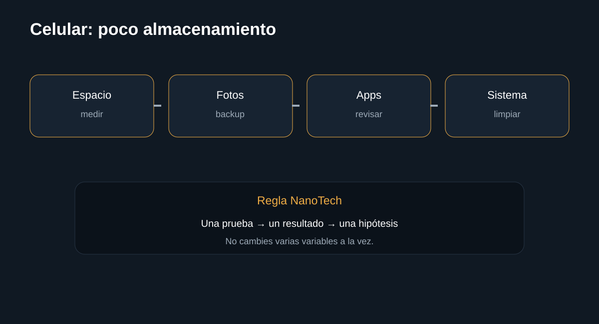

Introducción

Libera almacenamiento empezando por medir el consumo y proteger los datos. La guía busca que puedas separar causas antes de sustituir componentes.
Antes de empezar: seguridad
Desconecta el equipo cuando corresponda y no realices mediciones peligrosas sin formación e instrumental. En baterías, fuentes y placas, detén el procedimiento si detectas daño físico, líquido, olor extraño o calor anormal.
- Documenta el estado inicial.
- Haz una sola modificación cada vez.
- Conserva tornillos, cables y configuración original.
Herramientas
1. Medir el espacio
Primero identifica qué categoría ocupa almacenamiento.
Qué hacer
- Abre Ajustes > Almacenamiento y revisa el desglose por categoría (fotos/vídeos, apps, sistema, otros/caché).
- Presta atención a "Otros" o "Sistema": si ocupa varios GB de forma inusual, suele ser caché acumulada, no algo que debas identificar archivo por archivo.
- No borres carpetas del sistema que no reconozcas: muchas son necesarias para que las apps funcionen.
Registra el porcentaje de cada categoría antes de borrar nada: sin esta línea base no sabrás si la limpieza realmente liberó espacio.
InterpretaciónFotos/vídeos dominan → continúa al paso 2 (respaldo antes de borrar). Apps o caché dominan → continúa al paso 3.
2. Copia de seguridad
Antes de eliminar fotos o vídeos, asegúrate de tener una copia.
Qué hacer
- Confirma que la copia en la nube o en tu computadora esté realmente al día: revisa la fecha del archivo más reciente respaldado, no solo que diga "sincronizado".
- Abre 3-5 archivos al azar directamente desde la copia (no desde el teléfono) para confirmar que se ven bien y no están corruptos.
- Solo después, borra duplicados evidentes (capturas repetidas, ráfagas casi idénticas) o archivos claramente innecesarios.
Verifica que la copia esté completa antes de borrar cualquier original: un respaldo que se detuvo por falta de espacio en la nube se descubre demasiado tarde, cuando el original ya no existe.
InterpretaciónCopia verificada y archivos innecesarios eliminados → espacio liberado de forma segura. Copia incompleta → resuelve eso primero.
3. Revisar aplicaciones
Las apps y sus datos pueden ocupar gran parte del espacio.
Qué hacer
- Ordena las apps por tamaño (incluyendo sus datos, no solo el instalador) para identificar cuáles ocupan más espacio real.
- Desinstala apps que no hayas abierto en 2-3 meses; puedes reinstalarlas después si las necesitas.
- Limpia la caché de apps grandes (redes sociales, streaming) desde su configuración interna, no con un limpiador general: se regenera sola con el uso.
- Evita apps de "limpieza" o "boost" de terceros: muchas no liberan espacio real y algunas incluyen publicidad agresiva.
Limpia caché solo cuando sea apropiado: borrarla justo antes de usar la app puede hacer que cargue más lento la primera vez.
InterpretaciónEspacio liberado → continúa al paso 4 para una rutina. Poco espacio liberado → revisa de nuevo "Otros/Sistema" del paso 1.
4. Mantener margen libre
El objetivo es evitar que el sistema opere al límite.
Qué hacer
- Mantén al menos 10-15% del almacenamiento libre: por debajo de eso muchos sistemas se ralentizan y las actualizaciones pueden fallar por falta de espacio temporal.
- Revisa la carpeta de Descargas cada 2-4 semanas: acumula archivos olvidados sin que se note.
- Programa un recordatorio mensual, o activa la limpieza automática si tu sistema la ofrece.
El objetivo es evitar que el sistema opere al límite, no solo resolver la falta de espacio una vez: llegar al 99% de forma recurrente trae más lentitud y más riesgo al actualizar.
InterpretaciónCon rutina mensual, el espacio no debería volver a ser urgente. Si se llena de nuevo en semanas, revisa qué app o proceso genera datos nuevos constantemente.
Diagnóstico final
Fuentes y notas
El procedimiento prioriza conservar datos antes de eliminar archivos.